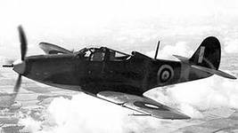

P-39

При разработке этого самолёта конструкторы Bell столкнулись с двумя глобальными проблемами. Первая заключалась в экспортной направленности P-39 и была неустранима. Невозможность установки турбокомпрессора на низковысотный двигатель Allison (по вполне объяснимым причинам) повлияла на то, что самолёт так и не смог занять достойного места в ВВС США. Специфика ведения воздушных боёв как в Европе, так и на Тихом океане не позволяла P-39 воспользоваться своими преимуществами, в то время как устранение основного недостатка - слабых высотно-скоростных характеристик - было невозможно из-за запрета на экспорт турбокомпрессоров за пределы США.
Вторая глобальная проблема была связана с технологическим провалом в производстве 20-мм пушек Hispano-Suiza AN-M1/M2C, выпускавшихся компанией Bendix. Эту проблему и попытались в первую очередь устранить специалисты Bell. Практически непригодные к использованию 20-мм пушки сменили на старые, тяжёлые, но более надёжные 37-мм Colt-Browning M4. Пушка обладала массой недостатков, прежде всего низкой скорострельностью и крайне скромным боекомплектом – всего 30 снарядов, но зато, несмотря на свой колоссальный вес, смогла разместиться в передней части фюзеляжа «Кобры»; кроме того, она обладала несравнимым преимуществом перед продукцией Bendix – она стреляла. Необходимо отметить, что и на первых сериях P-39 тоже не всегда устанавливались 20 мм пушки M1, кое-где можно было найти и M4. Но моделью, на которой M4 была установлена уже как стандартное вооружение, стала только Модель 26 (P-39G). Правда, в серию она не пошла, зато стала родоначальницей целого ряда практически аналогичных серий от P-39K до P-39Q. Основные узлы были позаимствованы у довольно перспективной серии P-39D-2.>От более ранних моделей серия P-39K отличалась двигателем Allison V-1710-63, удачно опробованным на той же D-2 и оснащавшимся форсажной системой. Он развивал номинальную мощность 1352 л с и 1550 л с в WEP-режиме. Серия K, единственная оснащавшаяся одновременно и этим типом двигателей и трёхлопастным винтом типа Aeroprop, была тяжелее D-2 на целых 360 кг, хотя внешне кроме винта никаких других отличий не имела. На самом деле, лишний вес давало дополнительное бронирование, которое использовалось, начиная с К, на всех последующих сериях.
>Всего до августа 1941 года было построено 210 экземпляров серий K-1-BE, K-2-BE и K-5-BE, которые практически не отличались друг от друга. 40 из них были отправлены в СССР.